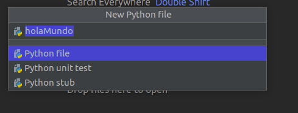
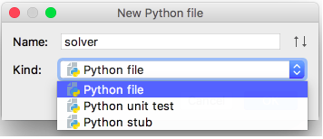
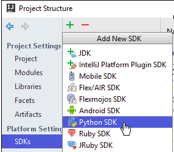
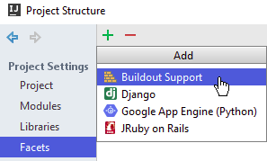
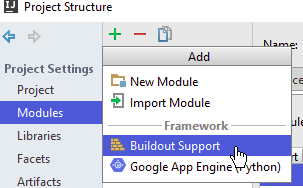
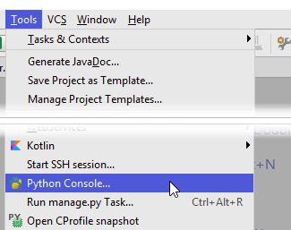

Caracteristicas¶
Introduccion:¶
PyCharm es uno de los entornos de desarrollo más completos para Python. Es parte del suite de herramientas de programación ofrecidas por JetBrains, que cuenta con entornos para construir código en distintos idiomas como PHP y Ruby.
Características de PyCharm:¶
- Resaltado de sintaxis
- Sangría automática y formato de código
- Completar código
- Comentario de línea y bloque
- Error de resaltado sobre la marcha
- Fragmentos de código
- Código plegable
- Fácil navegación y búsqueda de código
- Análisis de código
- Inyecciones de lenguaje configurables
- Refactorización de Python
- Documentación
Plataformas compatibles:¶
PyCharm es un IDE multiplataforma que funciona en Windows, macOS y Linux.
Instalacion:¶
Para instalar PyCharm usando umake, primero debe tener umake. Normalmente, ya debería estar instalado en su sistema, pero si no lo está, use el PPA a continuación para obtener la última versión estable de umake:
- Añadir repositorio “#add-apt-repository ppa:ubuntu-desktop/ubuntu-make”
{kind=link}
- Actualizamos “#apt-get update”
{kind=link}
- Instalamos el paquete ubuntu-make “#apt-get install ubuntu-make”
{kind=link}
- Finalmente instalamos ide pycharm “#umake ide pycharm”
{kind=link}
Creación del Proyecto:¶
Para crear un proyecto, realice una de las siguientes acciones:
En el menú principal, elija Create | New Project
{kind=link}
- En el cuadro de diálogo Nuevo proyecto , especifique el nombre del proyecto y su ubicación. El diálogo puede diferir según la edición de PyCharm.
{kind=link}
- Se creará el nuevo proyecto:
{kind=link}
Crear un archivo Python :¶
- Seleccione la raíz del proyecto en la ventana de la herramienta Proyecto , luego seleccione Archivo | Nuevo … desde el menú principal o presione Alt+Insert.
{kind=link}
- PyCharm crea un nuevo archivo Python y lo abre para editarlo.
{kind=link}
Creación de programa:¶
Por ejemplo vamos a imprimir “Hola Mundo”
Para ejecutar presionamos “CTRL + F5” no es necesario compilar el pycharm nos ejecuta.
{kind=link}
Requisitos Profe:¶
- Facilita lectura del codi (per exemple ressaltant paraules claus).
{kind=link}
- Evitar errors (es marquen els errors de sintaxi mentre es programa).
{kind=link}
Compilar i executar de manera ràpida.
Presionamos CTRL + F5
{kind=link}
- Ampliar el IDE a altres funcionalitats (pot ser caldrà instal·lar-hi quelcom més):
- ◦ explicar com es pot usar el IDE a un altre llenguatge no escollit:
- No podemos usar el ide porque es especifico para el python
- ◦ si hi ha possibilitat d’afegir funcionalitats gràfiques per fer:
▪ disseny d’interfície ▪ diagrames conceptuals (UML o enitat/relació)
- Instalacion del PLUGIN:
- ◦ El tipo de módulo Python se agrega a los asistentes Proyecto nuevo y Módulo nuevo .
{kind=link}
◦ El tipo de archivo Python se agrega al Archivo | Nuevo menú El archivo Python, la prueba unitaria de Python y los tipos de archivo auxiliar de Python están disponibles.
{kind=link}
◦ Python SDK se puede especificar en la ventana emergente Agregar nuevo SDK en el nodo SDK del cuadro de diálogo Estructura del proyecto .
{kind=link}
◦ Django y Google App Engine (Python) se implementan como las facetas, que se pueden adjuntar a un módulo de Python, ya sea en el cuadro de diálogo Nuevo proyecto o en las páginas Módulos o facetas del cuadro de diálogo Estructura del proyecto:
 {kind=link}
{kind=link}
◦ Los comandos relacionados con Python se agregan al menú Herramientas :
{kind=link}